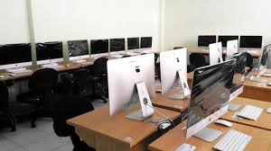

* Lab. Pemrograman

Di laboratorium ini diselenggarakan praktikum Pemrograman Terstruktur, Algoritma, Software Engineering, Pemrograman Berbasis Obyek.
Workshop ini juga berfungsi sebagai common support bagi kebutuhan pengguna komputer. Mahasiswa dapat menggunakan komputer yang ada untuk mengerjakan tugas dan akses internet sesuai aturan yang telah ditetapkan.
* Lab. Multimedia
Pada laboratorium ini diselenggarakan praktikum Desain Grafis dan Multimedia. Adapun aktifitasnya yaitu untuk melakukan Praktikum Desain Grafis, Praktikum Multimedia dibidang multimedia seperti(pembuatan film, editing image, editing video dan pembuatan animasi) dan pekerjaan tugas mata kuliah.
* Lab. Jaringan Komputer

Pada laboratorium ini diselenggarakan praktikum Sistem Operasi, Jaringan Komputer 1, admin dan keamanan jaringan, jaringan nirkabel dan Jaringan Komputer 2. Adapun aktifitas pada laboratorium Jaringan Komputer yaitu Praktikum Sistem Operasi, Jaringan Komputer 1 dan 2, Komunikasi Data
* Lab. Basis Data
Pada Laboratium ini diselenggarakan praktikum Basis Data, adapun aktifitasnya di lab Basis Data adalah Praktikum Basis Data dan Struktur Data, Pekerjaan tugas mata kuliah dan untuk kegiatan penelitian dan pengabdian pada masyarakat.
* Lab. Sistem Operasi

Pada laboratorium ini diselenggarakan praktikum Sistem Operasi , Arsitektur Komputer dan pemrograman aplikasi mobile. Adapun aktifitas pada laboratorium Jaringan Komputer yaitu Praktikum sistem operasi, Praktikum Arsitektur Komputer, Pemrograman Aplikasi Mobile dan Pekerjaan Tugas mata kuliah
* Lab. Komputasi Dasar(KOMDAS)
Di laboratorium ini diselenggarakan praktikum Pemrograman Terstruktur, Algoritma, software engineering, pemrograman berbasis obyek. Workshop ini juga berfungsi sebagai common support bagi kebutuhan penggunaan komputer. Mahasiswa dapat menggunakan komputer yang ada untuk mengerjakan tugas dan akses internet sesuai aturan yang telah ditetapkan. Adapun aktifitas pada laboratorium KOMDAS yaitu Praktikum Pemrograman Terstruktur, algoritma dan pemrograman dan pemrograman berbasis obyek